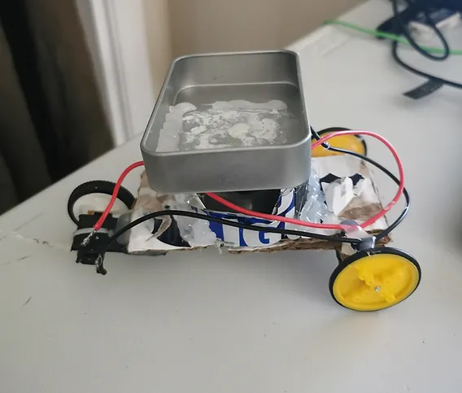

The objective of this project was to analyze the functionality of thermoelectric generator on a small car. The car was designed to operate using the thermoelectric generator. The thermoelectric generator is powered based on the difference in temperature, meaning that as the difference in temperature becomes higher the voltage increases generating more power to operate the motor of the vehicle. A candle was used to add heat on one of the surfaces of the thermoelectric generator, while ice was used as a cold source on the other side.
